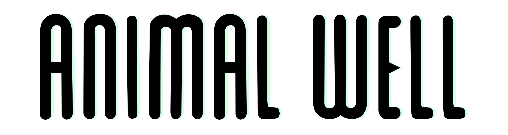

Animal Well

| Release Date: | May 9th, 2024 |
| Genre: | Puzzle-Based Metroidvania |
| Developer: | Billy Basso |
| Platform: | PC, Nintendo Switch, Playstation 5 |
| Details: | Website |
Animal Well is a unique game that combines aspects of various different genres to create something special. Developed solely by Billy Basso, this game takes the metroidvania style but uses it as a base for the main focus of secret-hunting, similar to FEZ. The game just throws you into it, as the player awakens from their pod and is set to venture into the different biomes of the well. As they explore, they find various different tools to use, different animals living within the well, and many, many secrets to find.
I remember watching some of the early trailers of this game, and thought it was an interesting concept. Then videogamedunkey backed the game as their publisher and pushed more information out about it, which made it look like a game I’d like. Then the reviews came out and most of them we’re giving it high praises and to go into it blind. I needed a game to play over the weekend, and figured this would be a nice adventure. Instead, I was hooked and enjoyed every moment of this game.
Gameplay
As mentioned above, this game plays a lot like other 2D Metroidvania games. It has sections of platforming, sections of puzzle-solving, but most interestingly is that there’s no traditional combat within the game. Which is a nice change of pace, especially for how the world is presented to the player. There’s no overarching evil or threat that the player is tasked with defeating. Just, you’ve awoken, explore your surroundings and discover the secrets of the well.
With the removal of combat, the game replaces that gameplay loop with discovering secrets, and boy does it do a good job in that. The world is filled with secrets to find, hidden away in every nook and cranny you could think of. When looking at the map, if there seems to be a space in the map that a room could fit in, chances are there’s something there to discover. If you’re not an avid secret hunter, the game still has something to offer as it has different “layers” of secret hunting. To just get to the credits, the level of obscurity is minimal, but getting deeper into the game gets harder and harder.
The game also provides you with various different utility items to aid with your adventure, like most other metroidvanias. However, there’s very few of these items, but they have a variety of ways that they can be used. For example, one of the early items you get is a bubble wand, which allows you to blow a bubble in front of you. You can jump off of these bubbles, effectively giving you a double jump. The bubbles also slowly descend when you’re on them, allowing you to “slow fall” down drops. Also can be used to go upwards if you blow the bubble in a gust of wind. It’s a simple tool, but has a number of usages to aid with your traversal. It gets even deeper as you obtain other tools, as they can be used together to achieve even further mechanics. It’s an excellent showcase on giving players tools that are simple to learn, but have a depth to them for the player to discover creative ways to utilize them.
Worldbuilding
While there isn’t much of a “story” in the traditional sense, how the world is presented to the player is worth noting. There’s no guidance given to the player, you’re simply just thrown into the game, only given prompts for controls. There’s no true tutorial, no guidance given to the player, just explore your surroundings like the newborn creature you’ve spawned in as.
There’s no dialogue within the game at all, so what you learn about the world is simply through the environments that you explore, encountering other animals and try to discern if they’re friend or foe from their body language. It gives the well this sense of mystery, urging you to continue exploring to hopefully find some answers or purpose to your presence in the well.
Overall Thoughts
This game is truly a unique experience. I enjoyed my playthrough of the game thoroughly, as I loved the organic nature of learning the mechanics of the game. I'd get a new tool, mess with it a bit to understand it on the surface, and then use it in a new way accidentally hours later. While that may not be nice for some people, it fits the vision of this game perfectly. As a puzzle game, I also really appreciated the different "layers" of the well. It makes the game more accessible to people who aren't as keen on the puzzle-solving aspect, allowing them to choose how deep into the well they want to go. The spritework done for the game is very pleasing to look at, really giving off the proper vibes that each area of the well is trying to present, especially when working in tandem with the lighting engine. Overall, Animal Well is a great game, and if you enjoy solving puzzles with some light platforming, you'll probably enjoy it as well!